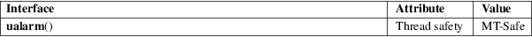

ualarm − schedule signal after given number of microseconds
Standard C library (libc, −lc)
#include <unistd.h>
useconds_t ualarm(useconds_t usecs, useconds_t interval);
Feature Test Macro Requirements for glibc (see feature_test_macros(7)):
ualarm():
Since glibc 2.12:
(_XOPEN_SOURCE >= 500) && ! (_POSIX_C_SOURCE
>= 200809L)
|| /* glibc >= 2.19: */ _DEFAULT_SOURCE
|| /* glibc <= 2.19: */ _BSD_SOURCE
Before glibc 2.12:
_BSD_SOURCE || _XOPEN_SOURCE >= 500
The ualarm() function causes the signal SIGALRM to be sent to the invoking process after (not less than) usecs microseconds. The delay may be lengthened slightly by any system activity or by the time spent processing the call or by the granularity of system timers.
Unless caught or ignored, the SIGALRM signal will terminate the process.
If the interval argument is nonzero, further SIGALRM signals will be sent every interval microseconds after the first.
This function returns the number of microseconds remaining for any alarm that was previously set, or 0 if no alarm was pending.
|
EINTR |
Interrupted by a signal; see signal(7). | ||
|
EINVAL |
usecs or interval is not smaller than 1000000. (On systems where that is considered an error.) |
For an explanation of the terms used in this section, see attributes(7).

None.
4.3BSD, POSIX.1-2001. POSIX.1-2001 marks it as obsolete. Removed in POSIX.1-2008.
4.3BSD, SUSv2, and POSIX do not define any errors.
POSIX.1-2001 does not specify what happens if the usecs argument is 0. On Linux (and probably most other systems), the effect is to cancel any pending alarm.
The type useconds_t is an unsigned integer type capable of holding integers in the range [0,1000000]. On the original BSD implementation, and in glibc before glibc 2.1, the arguments to ualarm() were instead typed as unsigned int. Programs will be more portable if they never mention useconds_t explicitly.
The interaction of this function with other timer functions such as alarm(2), sleep(3), nanosleep(2), setitimer(2), timer_create(2), timer_delete(2), timer_getoverrun(2), timer_gettime(2), timer_settime(2), usleep(3) is unspecified.
This function is obsolete. Use setitimer(2) or POSIX interval timers (timer_create(2), etc.) instead.
alarm(2), getitimer(2), nanosleep(2), select(2), setitimer(2), usleep(3), time(7)